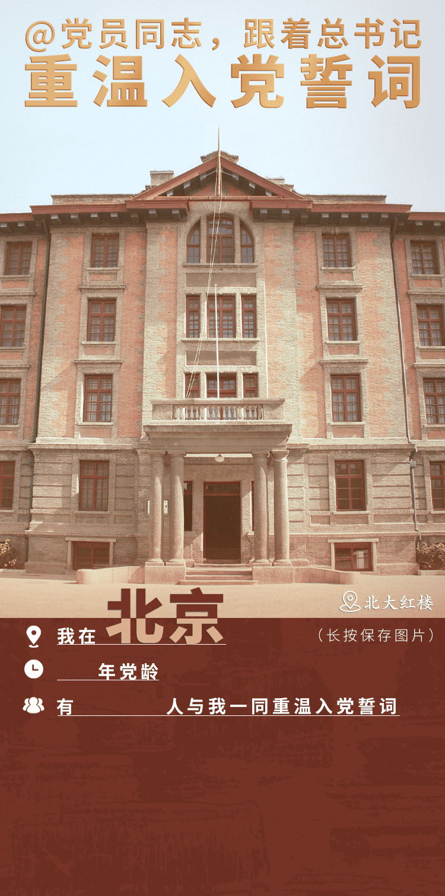
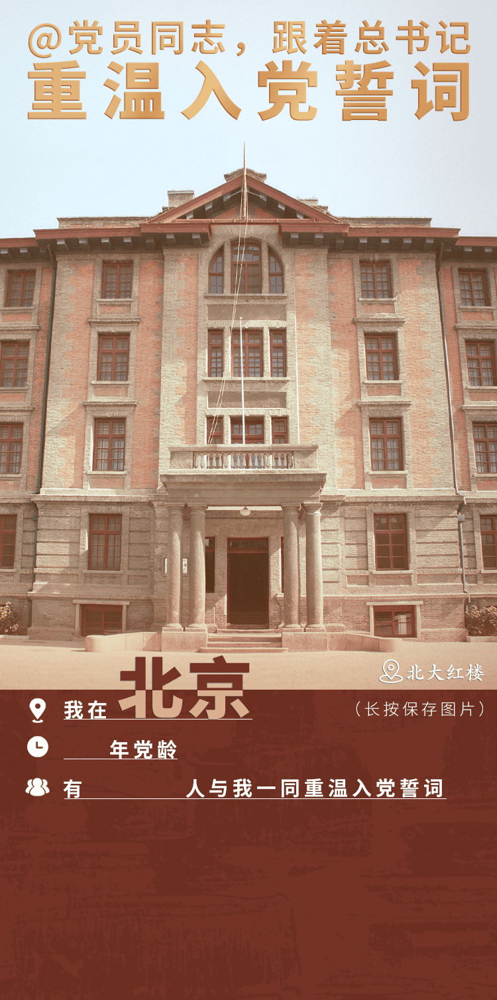
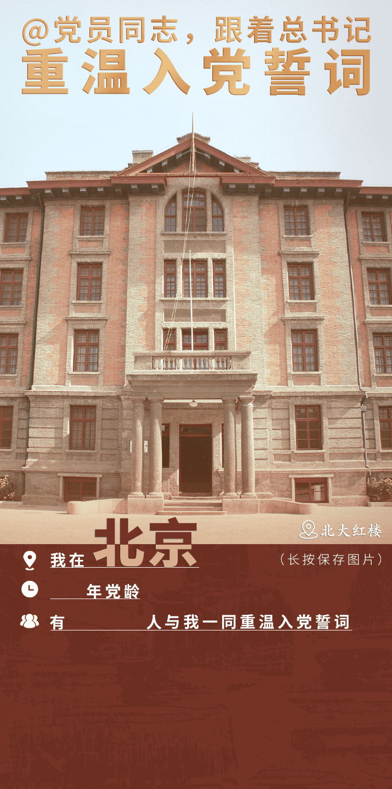

北京
天津
上海
重庆
河北
山西
辽宁
吉林
黑龙江
江苏
浙江
安徽
福建
江西
山东
河南
湖北
湖南
广东
海南
四川
贵州
云南
陕西
甘肃
青海
内蒙古
广西
西藏
宁夏
新疆
香港
澳门
台湾
我志愿加入中国共产党，拥护党的纲领，遵守党的章程，履行党员义务，执行党的决定，严守党的纪律，保守党的秘密，对党忠诚，积极工作，为共产主义奋斗终身，随时准备为党和人民牺牲一切，永不叛党。

12345
62


 
